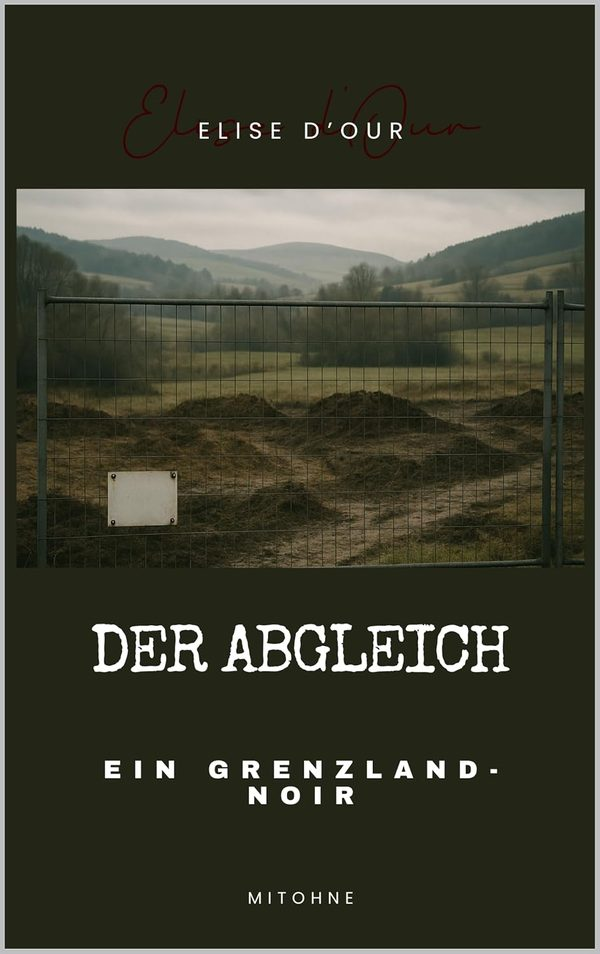

Grenzland-Noir · 2025
Der Abgleich
Ein Grenzland-Noir
Delia Eduit soll in Bergheim, einem kleinen Dorf in Ostbelgien, nur die Formalitäten einer EU-geförderten Bachrenaturierung prüfen. Ein Routineauftrag. Bis sie die Baustelle betritt.
Der Bauleiter ist tot. Ein Unfall, heißt es. Die Akten sind vollständig, die Stempel frisch. Nur in den Unterschriften steckt ein Widerspruch, und in den Gesichtern ein Schweigen, das zu perfekt ist. Kein großes Komplott. Etwas Gefährlicheres: ein System, das funktioniert.
Manchmal begann Korruption nicht mit Geld. Manchmal begann sie mit einem Stempel.Bei Amazon